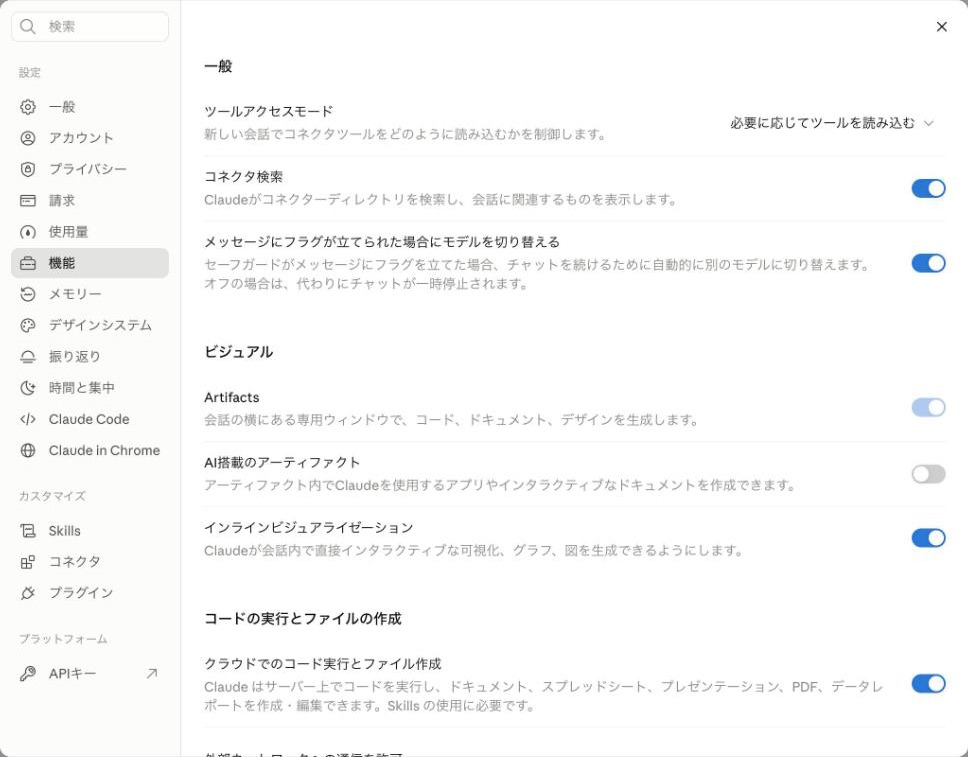
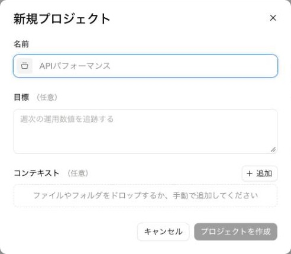
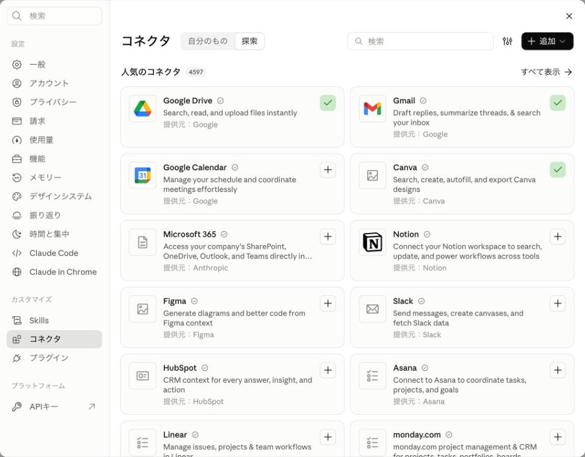

コピペで使えるプロンプト付き
Claudeに
「仕事を任せる」
はじめてガイド
「質問する」から「任せる」へ。
読み終わったら、仕事を1つ頼んでみましょう。
まず知っておいてほしいこと
-
順次展開中
新しいClaudeは少しずつ展開中です。まだ「Chat / Cowork」の切り替えが表示される人もいます。
-
有料プラン
仕事を任せる機能は Pro / Max / Team / Enterprise が対象です。無料版は、前半の機能を試せます。
-
デスクトップ版
パソコン内のフォルダを直接扱うには、Claudeのデスクトップアプリが必要です。
まずここから
最短ルート
全部読まなくても大丈夫。自分に合う方だけ、順番にやってみてください
無料で、今日の1件
Gmailの返信を、下書きまで任せる
- claude.ai でアカウントを作る
- 設定 →「コネクタ」→「探索」で、Gmailの「＋」を押して、Googleの許可を出す
- 「メールを整理して、返信の下書きを作る」の文章を送る
有料で、フォルダを任せる
パソコンの中の整理を、まるごと任せる
- 有料プラン（Pro以上）に入り、デスクトップアプリを入れる
- 練習用のフォルダを作って、コピーを入れる
- 「フォルダを整理してもらう」の文章を送る
どちらも、最初は「送信や削除はしないで、案だけ見せて」と頼むのが安心です。
Claudeって、
何がすごいの？
難しい話なしで言うと、実際の仕事を頼めるようになってきたことです。
これまでのAIは、質問すると答えを画面に出してくれる使い方が中心でした。今は、仕事をまるごと頼んで、できあがったファイルを受け取る使い方ができます。
これまで：聞く
「メールの返事、どう書けばいい？」
答えが画面に出る。コピーして、自分で貼る。
これから：任せる
「今週のメールを読んで、返事の下書きを作って」
メールを読み、下書きまで作ってくれる。確認するのは自分。
「Cowork」という名前を見かけたら
以前は「Cowork（コワーク）」という別のモードで、仕事を任せる機能が用意されていました。2026年9月16日から、これは通常のClaudeに統合されました。モードを切り替えなくても、ふつうに頼むだけで、Claudeが「すぐ答える」か「作業をする」かを判断します。
順次展開中
新しい画面は少しずつ広がっています。まだ「Chat / Cowork」の切り替えが出ている人は、仕事を任せたいときに「Cowork」側で頼んでください。出ていない人は、そのまま頼むだけです。このガイドの頼み文は、どちらの画面でも使えます。
どこまでできる？
無料と有料の違い
「無料でも全部できる」と思って始めると、がっかりしてしまうので、先に確認しましょう
| できること | 無料 | 有料 |
|---|---|---|
| 質問して、答えをもらう | ○ | ○ |
| 仕事の前提を覚えてもらう（メモリ） | ○ | ○ |
| 仕事ごとの「棚」を作る（プロジェクト）作れる数には上限があります | ○ | ○ |
| Word・Excel・PowerPointなどを作ってもらう設定をオンにして、ダウンロードして受け取ります | ○ | ○ |
| Gmail・カレンダー・ドライブとつなぐ | ○ | ○ |
| 有料プラン仕事を任せる（実行型タスク・旧Cowork） | × | ○ |
| 有料プランデスクトップ版パソコン内のフォルダを直接扱うブラウザ版・スマホでは、パソコン内のフォルダは自由に操作できません | × | ○ |
ここだけ覚えてください
無料でも、このガイドの前半（覚えてもらう・プロジェクト・ファイル作成・Gmailなどとつなぐ）は試せます。仕事を「任せる」本番は、有料プランです。
無料版には利用の上限があり、一定時間（約5時間）ごとにリセットされます。会社のアカウント（Team・Enterprise）は、管理者の設定で使えない機能がある場合があります。
STEP 1
任せたい仕事を
探そう
今まで自分でやっていた仕事の中に、任せられるものがあるかもしれません。当てはまるものにチェックしてください。チェックは、このブラウザに保存されます。
選んだ仕事 0 / 8
最初は「1つだけ」
たくさん選んだ人も、最初に任せるのは1つだけで大丈夫です。「毎週やっていて、少しめんどう」な仕事が、いちばん向いています。
STEP 2
準備（10分）
- アカウントを作る：claude.ai でアカウントを作ります（18歳以上、対応地域のみ）。
- デスクトップアプリを入れるデスクトップ版：claude.com/download から、MacかWindowsのアプリをダウンロードします。無料でも使えます。
- ファイル作成をオンにする無料でもOK：設定を開き、左の「機能」→「コードの実行とファイルの作成」にある「クラウドでのコード実行とファイル作成」をオンにします（すでにオンの人もいます）。Word・Excelなどを作ってもらえるようになります。
- 有料プランを選ぶ有料プラン：仕事を任せるには、Pro（月20ドル＋日本では消費税10%）以上が必要です。料金ページで、最新の条件を確認してから申し込みましょう。

画面の名前は変わることがあります
ボタンやメニューの名前は、アプリの更新で変わることがあります。見つからないときは、公式の案内（このページの最後にリンクがあります）で確認してください。申し込みの前に、無料版で前半の機能を試してみるのもおすすめです。
STEP 3
自分の仕事を
覚えてもらう
無料でもOK
毎回「私は〇〇の仕事をしていて…」と説明するのは大変です。最初に一度、自分の仕事の前提を伝えておくと、あとの頼みごとがぐっと楽になります。方法は2つあります。
方法① いつも守ってほしいことは「Claudeへの指示」に
一度書いておけば、どのチャットでも覚えてくれます。文章のくせや、説明のしかたなど、ずっと変わらないことに向いています。
- 設定を開き、左の「アカウント」を押す
- 「Claudeへの指示」の枠に、いつも守ってほしいことを書く
書き方の例
- 説明は簡潔に、要点を先に書いてください
- 専門用語は使わず、やさしい言葉でお願いします
- 私は在宅で事務の仕事をしています。文章はやわらかく丁寧にしてください
方法② 自己紹介をまとめて覚えてもらう
プロンプト① 自分の仕事を伝える
あなたに、私の仕事の前提を知っておいてもらいたいです。 次の内容を読んで、私のことを整理してください。 【私について】 ・仕事：〈例：在宅で事務の仕事をしています〉 ・よく使う道具：〈例：Gmail、Googleカレンダー、Excel〉 ・文章のくせ：〈例：やわらかく丁寧。長い文章は苦手〉 ・困っていること：〈例：メールの返信に毎日30分かかる〉 分からないことがあれば、まず私に質問してください。 そのあと「あなたについて分かったこと」を5行以内でまとめて見せてください。 間違いがあれば、私が直します。
〈 〉の部分は、自分の内容に書き換えてから送ってください。
覚えてもらった内容は、自分で見られます
Claudeが覚えた内容は、設定の「メモリー」で確認・編集できます。パスワードやカード番号など、覚えてほしくない情報は書かないでください。
STEP 4
仕事ごとの
「棚」を作る
無料でもOK
プロジェクト（Projects）は、仕事ごとに「資料」と「ルール」を置いておける棚のようなものです。たとえば「メール対応」の棚には、よく使う文例と、守ってほしいルールを入れておきます。
- 画面左のメニューで、「プロジェクト」の横の「＋」を押す
- 「名前」を入れる（例：メール対応、セミナー準備）
- 「目標」に、下の文章を貼り付ける
- 必要なら、「コンテキスト」の「＋追加」で、資料（文例、過去の資料など）を入れる
- 「プロジェクトを作成」を押す

プロンプト② プロジェクトの「目標」に入れる文
このプロジェクトでは、私の〈例：メール対応〉の仕事を手伝ってください。 【前提】 ・相手：〈例：お客様、取引先〉 ・文章のトーン：〈例：丁寧でやわらかく、3〜5行で〉 ・必ず守ること：〈例：金額や日付は、資料に書いてあるものだけを使う〉 【進め方】 ・作業の前に、やることを短く書いて見せてください。 ・分からないことは、想像で埋めずに質問してください。 ・終わったら、確認してほしい点を最後に書いてください。
ポイント
棚の中の頼みごとは、毎回ルールを書かなくても、同じ前提で進みます。仕事が増えたら、棚も1つずつ増やしましょう。
STEP 5
ファイル・フォルダを
任せる
有料プランデスクトップ版
ここからが「任せる」の本番です。パソコンの中のファイルやフォルダを、Claudeに読んで作業してもらいます。
最初は「練習用フォルダ」で
大事なファイルは使わず、コピーを入れた練習用のフォルダを用意しましょう。アプリで作業するフォルダを選ぶと、Claudeはそのフォルダの中だけを扱います。ファイルを変更するときは、確認の画面が出ます。
ブラウザ版やスマホでは、パソコン内のフォルダは扱えません。ファイルを画面にアップロードして渡す形になります。
例① フォルダを整理してもらう
プロンプト③ まずは案だけ出してもらう
このフォルダの中身を整理したいです。 まず、フォルダの中のファイルを読んで、次の3つだけ教えてください。 1. 何がどれくらい入っているか（種類ごとの数） 2. おすすめのフォルダ分けの案 3. ファイル名を付け直したほうがよいもの（変更前→変更後の表） まだ、ファイルの移動や名前の変更はしないでください。 私が「この案で進めて」と言ってから実行してください。 削除はしません。元のファイルは残してください。
例② 資料を読んでまとめてもらう
プロンプト④ 資料から報告書のたたき台を作る
このフォルダにある〈例：先月の打ち合わせメモ〉をすべて読んで、 〈例：チームに共有する報告書〉のたたき台をWord形式で作ってください。 ・読む人：〈例：上司、仕事に詳しくない人〉 ・長さ：〈例：A4で1枚くらい〉 ・資料に書いていないことは足さず、分からない所は「不明」と書いてください。 ・元のファイルは変えず、新しいファイルとして保存してください。 ・最後に、どの資料のどこから書いたかを一覧にしてください。
例③ 表を集計して報告文にしてもらう
プロンプト⑤ Excelの集計と報告文
〈例：売上表.xlsx〉を読んで、次のことをしてください。 1. 〈例：月ごとの合計〉を出す 2. 前の月と比べて、増えた所・減った所を3つずつ挙げる 3. 〈例：上司に出す報告文〉を5行で書く 元のファイルは書き換えず、集計結果は新しいExcelファイルに保存してください。 計算の仕方も、短く説明してください。
例④ 資料やスライドを作ってもらう
無料でもOKファイルを作ってダウンロードする形
プロンプト⑥ PowerPointの資料づくり
〈例：来月のお客様向けセミナー〉の案内資料を、PowerPointで作ってください。 ・枚数：〈例：5枚〉 ・伝えたいこと：〈例：日程、内容、参加方法〉 ・読む人：〈例：AIが初めての40代女性〉 ・文字は大きく、1枚に伝えることは1つだけ。 作る前に、スライドの構成案を見せてください。私がOKしたら作成してください。
〈 〉の部分は、自分の内容に書き換えてから送ってください。
できあがったら、自分の目で確認
数字・名前・日付は、元の資料と見比べてください。Claudeは間違えることがあります。確認するところまでが、1回の仕事です。
AIに任せられる仕事を、
もっと増やしたい人へ
ここまでで、Claudeに仕事を頼む感覚がつかめてきたのではないでしょうか。
AIを仕事につなげる方法や、初心者さん向けの活用術を『AIマネタイズの教科書』にまとめています。無料で受け取れます。
受け取りは任意です。このまま下に進んでも、最後まで読めます。
STEP 6
Gmailやカレンダーと
つなぐ
無料でもOKコネクタ
コネクタは、Claudeと、Gmail・Googleカレンダー・Googleドライブをつなぐ仕組みです。つなぐと、Claudeがメールや予定を読んで、仕事をしてくれます。
- 設定を開き、左の「コネクタ」を押して、上の「探索」を押す
- Gmail・Google Calendar・Google Driveの右の「＋」を押す（つながっているものは、緑のチェックが付いています）
- Googleアカウントの確認画面が出たら、内容を読んで自分で許可する

最初は「下書きまで」
つなぐと、Claudeはメールの送信や予定の登録・変更もできるようになります。最初は「送信はしないで、下書きまで」「登録する前に確認して」と頼んでおくと安心です。
メールを整理して、返信の下書きを作る
プロンプト⑦ Gmailの整理と下書き
Gmailの〈例：この1週間〉の受信メールを読んで、整理してください。 1. 返信が必要なメールを、急ぎ順に一覧にする（差出人・件名・理由） 2. そのうち上位3通について、返信の下書きを作る ・私の文章のくせ：〈例：丁寧でやわらかく〉 ・送信はしないでください。下書きとして見せてください。 ・金額や日付など、メールに書かれていないことは書かないでください。
予定の候補日を出してもらう
プロンプト⑧ カレンダーで空き時間を探す
Googleカレンダーを見て、来週の予定を整理してください。 ・〈例：1時間の打ち合わせ〉を2回入れたいです。 ・避けたい時間：〈例：午前中、18時以降〉 ・空いている時間から、候補を3つ出してください。 予定の登録・変更・削除は、まだしないでください。 私が候補を選んだあとで、登録してください。
ドライブの資料を探してまとめる
プロンプト⑨ Googleドライブの資料探し
Googleドライブの中から、〈例：「セミナー」に関する資料〉を探してください。 見つかった資料のタイトルと、内容を2行ずつでまとめた一覧を作ってください。 そのうえで、〈例：次のセミナーで使えそうなポイント〉を5つ挙げてください。 ファイルの移動・削除・共有設定の変更はしないでください。
〈 〉の部分は、自分の内容に書き換えてから送ってください。
STEP 7
いくつかの作業を
まとめて任せる
有料プラン
慣れてきたら、「調べる → まとめる → 資料にする」のように、いくつかの作業をひとまとめで頼んでみましょう。コツは、作業に入る前に、進め方を見せてもらうことです。
- 1
ほしいもの（ゴール）
- 2
使う材料
- 3
守ってほしいこと
- 4
先に進め方を見せて
プロンプト⑩ まとめて頼む型
〈例：来月のミニセミナーの準備〉を手伝ってください。 最終的にほしいもの：〈例：当日の進行表と、案内メールの下書き〉 材料：〈例：このフォルダのメモ、Googleドライブの過去資料〉 期限：〈例：今週金曜まで〉 作業に入る前に、次の3つを見せてください。 1. やることの順番（手順） 2. 私に確認したいこと 3. 作るファイルの名前と形式 私がOKを出したら、手順どおりに進めてください。 途中で迷ったら止まって質問してください。
〈 〉の部分は、自分の内容に書き換えてから送ってください。
直してほしいときは「場所・気になる点・希望」
「もっとやさしくして」だけだと、全体が書き換わってしまいます。どこを、何が気になって、どうしたいかを伝えましょう。
プロンプト⑪ 直してもらうとき
〈例：2段落目〉の〈例：「自動化」という言葉〉が、初めて読む人には難しそうです。 〈例：買い物メモの例〉で言い換えてください。 ほかの部分は変えないでください。
STEP 8
安全に
任せるコツ
任せるときは、次の6つだけ守ってください。チェックは、このブラウザに保存されます。
チェック済み 0 / 6
出どころの分からないファイルに注意
ほかの人から届いたファイルの中に、Claudeへの「隠れた指示」が入っていることがあります。公式も注意を呼びかけています。知らない相手のファイルは、そのまま読み込ませないでください。
思っていたのと違う作業が始まったら
まず停止ボタンで止めて、次の文章を送ってください。
プロンプト⑫ 止めて、状況を聞く
いったん止めてください。 ここまでに、何を変更しましたか？ ファイル名と内容を3行で教えてください。 続きの作業は、私が「進めて」と言うまでしないでください。
GOAL
今日の1件を
任せてみよう
STEP 1で選んだ仕事から、いちばん小さいものを1つ選びます。下の文章に当てはめて送れば、準備は完了です。
無料でもOK最初の1件のおすすめ
無料版の人は、STEP 6でGmailをつないで、「メールを整理して、返信の下書きを作る」から始めましょう。有料プラン＋デスクトップ版の人は、フォルダの整理が最初の1件におすすめです。
プロンプト⑬ 仕事を1つ任せる
私の仕事を1つ、任せたいです。 【任せたい仕事】〈例：先週のお客様メールの整理〉 【使う材料】〈例：Gmailの受信メール／このフォルダのファイル〉 【ほしい形】〈例：要返信の一覧と、返信の下書き3通〉 【守ってほしいこと】〈例：送信しない／元のファイルは変えない〉 作業の前に、進め方を短く見せてください。私がOKを出したら始めてください。 終わったら、私が確認すべき点を最後に書いてください。
〈 〉の部分は、自分の内容に書き換えてから送ってください。
終わったら、3つ確認
- 頼んだとおりのものができているか
- 数字・名前・日付が、元の資料と合っているか
- 元のファイルが残っているか
うまくいかなくても大丈夫
最初から完璧にはいきません。直してほしい所を「場所・気になる点・希望」で伝えれば、少しずつ思ったものに近づきます。1回やってみたあなたは、もう「任せる側」の入り口に立っています。
もっと作りたい人の
次のステップ
有料プランデスクトップ版
「自分で使うツールを作りたい」「Webページを作ってみたい」と思ったら、Claude Code（クロード・コード）があります。パソコンの中で、ファイルを作ったりプログラムを書いたりする作業まで任せられる、開発向けの機能です。
デスクトップアプリの「Code」から使えます。まずはこのガイドの内容に慣れてから、のぞいてみてください。
英語のページは、ブラウザの翻訳機能で日本語にして読めます。
困ったとき
自分の画面に「Cowork」がありません。使えませんか？
使えます。Coworkは通常のClaudeに統合されたため、新しい画面では別モードがなく、ふつうの会話の中で頼みます。ただし、仕事を任せる機能は有料プランが対象です。無料版の場合は、プランを確認してください。
「Chat / Cowork」の切り替えが出ています。
新しい画面が順次展開中のため、まだ切り替えが残っている人がいます。仕事を任せたいときは「Cowork」側で頼んでください。そのうち新しい画面に変わります。
無料版でも全部できますか？
いいえ。覚えてもらう・プロジェクト・ファイル作成・Gmailなどとつなぐ、までは無料でも試せます。仕事を任せる機能と、パソコン内のフォルダを扱う操作は、有料プラン（デスクトップ版）が前提です。
ブラウザ版やスマホで、Mac内のフォルダを操作できますか？
自由には操作できません。パソコン内のフォルダを扱うには、Claudeのデスクトップアプリが必要です。ブラウザ版・スマホでは、ファイルをアップロードして渡す形になります。
会社のアカウントで、機能が使えません。
Team・Enterpriseのアカウントでは、管理者の設定で使える機能が決まっていることがあります。会社の管理者に確認してください。
公式情報
2026年10月7日に確認
機能や料金は変わることがあります
Claudeは頻繁に更新されます。画面の表示や対象プランが、このガイドと違う場合は、公式の最新情報を優先してください。このガイドは、効果や成果をお約束するものではありません。
40代からでも、
働き方は変えられる。
仕事を任せられるようになると、時間に少し余裕が生まれます。私も40代からAIを使って、いろいろな仕事に挑戦しています。
「AIを使って家で働きたい」
「今より収入の柱を増やしたい」
そんな方に向けて、AI初心者さんでもAIを仕事に活かす考え方や方法をまとめた
『AIマネタイズの教科書』
も無料でご用意しています。

また、「何から始めたらいいのかわからない」「自分には何が向いているのか相談したい」
という方に向けて、AI収益化サポート会も実施中です。
個別でのご相談も、下のLINEから受け付けています。
一緒に新しいことに挑戦していきましょう！
LINEで無料で受け取れます